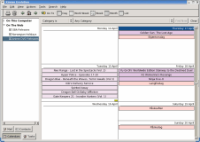
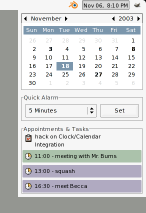
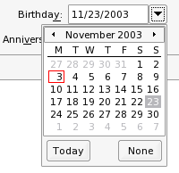
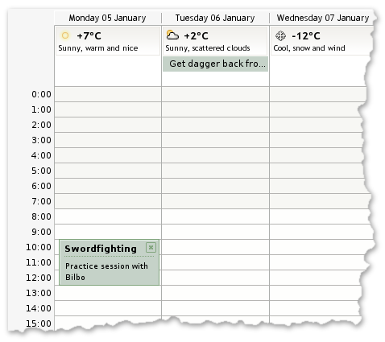
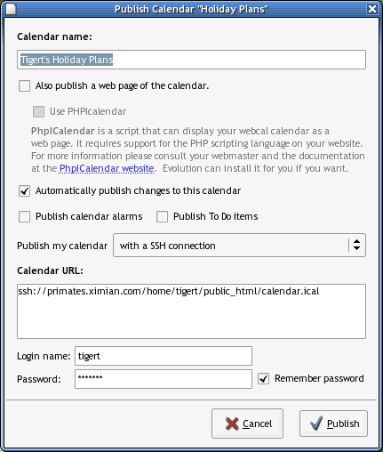
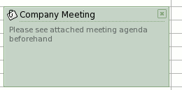

|
Calendar
|
Bounty: $15
|
|
In Evolution 2.0, users can aggregate multiple simultaneous
calendar sources into a single view. This means that you can overlay
group calendars and other people's calendars into your own calendar
view, which helps you keep others in mind while you schedule your
life. The various backend calendars can even be color-coded in the
calendar view.

We would like Evolution to ship with a large number of calendars
containing the schedules for national holidays, religious holidays,
and other events of general interest. For example, calendars of
sporting events or a Linux conference schedule would be neat.
Because Evolution 2.0 allows you to specify a URL to a calendar, it
is even possible for these to be hosted online and cached locally.
This might be useful for things like the GNOME release schedule.
|
| Affected Modules |
|
This task probably won't involve patching any existing modules, though
we will include any accepted calendars in the evolution module.
|
| How |
|
Find and check the schedules for various types of events, and create a
calendar in the standard iCal format. Submit the calendar file or
files, along with a short description, to evolution-patches@ximian.com.
Until Evolution provides an 'Export' mechanism, the files should be
copied (if created in Evolution) from the Evolution2.0 tree, that is
~/.evolution/calendar/local/OnThisComputer/"name", where
"name" is the name of the calendar you created. If created in
Evolution 1.4, the file to copy is
~/evolution/local/Calendar/subfolders/"name".
|
| Pointers |
|
The following links might be helpful:
Please note that downloading proprietary .ical files and
submitting them is not acceptable. To collect this bounty, you
must provide an unencumbered, freely-licensed (X11) iCalendar file.
|
| Special Note |
|
The bounty for this task is per-calendar. We will pay bounties for up
to 30 calendars.
|
|
|
When you click on the clock on the GNOME panel, a little calendar
descends. A proper integration patch for this calendar would do the
following:

- Highlight in bold the days which have appointments.
- Below the calendar, show a small summary of the appointments on the selected day.
- Double clicking on a day opens the Evolution calendar to that day.
- Aggregate multiple calendars, with a configuration dialog to select which calendars to aggregate.
- Redo the QuickAlarm frame patch to take up less space.
|
| How |
|
There is code in gnome-cal.c and tag-calendar.c which is in evolution/calendar/gui/ to tag the mini calendar in Evolution,
which should serve as a useful starting point. Essentially you will
need to create an ECalView (see evolution-data-server/calendar/libecal, and monitor it to
track the changes. You can create a different ECalView for the
current day to get the list of events for the day and monitor them if
there are changes.
|
| Affected Modules |
|
The clock applet is part of the gnome-panel
module. You will need to make use of the new calendar APIs in evolution-data-server/calendar/libecal.
|
| Pointers |
|
You may find this glade mockup useful.
|
|
|
|
Evolution's contact editor allows you to annotate a contact with
the dates of their birthday and anniversary. However, these dates  don't automatically copy themselves
into your calendar. Unless you explicitly add the dates to your
calendar, you won't see them when you glance through your schedule,
and an alarm won't fire to warn you of a friend's upcoming
birthday.
Clearly, this is a travesty.
The right solution is to create a special calendar backend which
reads birthdays and anniversaries out of the user's addressbook.
Using Evolution 2.0's calendar aggregation feature, the user can then
overlay a friend's important life events into the calendar view by
clicking a single checkbox.
|
| Affected Modules |
|
The only module affected will be evolution.
|
| Pointers |
|
Start by joining the Evolution
Hackers mailing list.
|
|
|
|
Calendar
|
Bounty: $750
|
|
Write a calendar backend that contacts some weather source and provides
weather forecast data for the upcoming week or so as all-day events, so
it shows up in your calendar. This information should be cached locally,
so you can view it when offline.
A mockup on how it should be integrated on the calendar view is below.

|
| How |
|
The backend just has to get the weather forecast information from
some place (determining that place is part of the job for this bounty,
you might start by looking at where the weather applet gets its
information) and, using ECalBackendFile, create a local copy of that
information (an all day event for each day) in the local file managed
by ECalBackendFile. The backend should probably remove old weather
forecasts, and just keep the ones for the current day and future
days.
The only question remaining is how to allow users to add that backend
to the list of calendars configured. An option could be to create the 'Weather'
calendar on startup, so that it's always available to users. Although there
probably should be a way to add it back if a user ever removes it. In that
case, the 'New Calendar' dialog, new-calendar.c in (evolution/calendar/gui/dialogs)
could be extended to support the addition of local, remote and any special
kind of calendar backends (weather, birthdays, etc).
Another solution could be to have a config control page for the weather backend,
so that it can ask users all the required information.
Also, a way to use the different weather icons is needed. The best way could be
to use the categories stuff, which unfortunately is hard coded (a fixed set of categories
and icons for those categories is available), so there is the need to have a way for the
backend to register those new categories (Sunny, Rainy, etc) and the icons
associated with it.
|
| Affected Modules |
|
|
| Tips |
|
Use one of the existing backends, probably the http backend, as a
starting point. Grep sources for "webcal" and see how
it's hooked in. The old summary code used to pull weather data,
so that should provide some clues too.
|
|
|
Calendar
|
Bounty: $1000
|
|
Apple's iCal has made "calendar sharing" popular. It's a nice feature where any user can create a calendar
of events and then publish it on a website, to share it with other users. Others can then "subscribe" their
calendar application to that calendar file, and updates are automatically synced to their imported calendar
whenever the master file changes. This makes it easy and convenient to share conference schedules, meeting
times, club events, moving dates and times and so on.
Implement this calendar publishing feature in Evolution. There are two things: first, it needs to just upload
the .ics file to a remote location, using gnome-vfs facilities (give the user a few common choices like
ssh://, FTP, WebDav and saving to a file. Then automatically push updates to the exported file whenever new
events are added or things are being changed. A GUI mockup for exporting is provided below:

We should give a possibility to export to a simple HTML page as well for those visitors who don't use a
calendar program that supports webcal:// (webcal is just a URI scheme that should invoke Evolution's
"Calendar Import" dialog that does the same as this one but reverse).
|
| Affected Modules |
|
Both evolution and evolution-data-server will be affected.
|
| How |
|
Augment the calendar's http backend with the necessary export capabilities. The backend resides in
evolution-data-server/calendar/backends/http, and uses the file backend to operate on
locally cached calendars. The backend could also handle the HTML generation, exporting it to one or more
files alongside the ICS file. New named options need to be added to the backend's ESource - e.g.
user, password, and a flag indicating whether to generate HTML. Additional GUI elements need to be
added to evolution/calendar/gui and evolution/calendar/gui/dialogs.
When implementing the HTML generator, you may want to look at HTML
output from existing web calendars such as PhpICalendar.
|
|
|
RFC 2445 describes a method of describing free/busy
information (VFREEBUSY components). Evolution currently
can only publish free/busy information via email attachments.
Evolution should support publishing free/busy information to an
http:// type URL, as discussed in Ximian Bug #16567.
|
| How |
|
There should be a configuration control (see cal-prefs-dialog in evolution/calendar/gui/dialogs for an example) that
allows the user to setup the URLs to publish to and which calendars to
use for creating the free/busy information. There should be a
configuration option for the user to detail when they want their
calendar published, ie "Every Day", and Evolution should endeavor to
do this. There should also be a menu option added to the calendar to
allow the user to publish the information whenever desired.
To actually obtain the free/busy information, you simply need to call
e_cal_get_free_busy in evolution-data-server/calendar/libecal,
see calendar-commands.c in evolution/calendar/gui/ for an example of this.
|
| Pointers |
|
You should subscribe to the
evolution-hackers mailing list, and discuss any technical issues
there. JP Rosevear <jpr@ximian.com> and Hans Petter Jansson
<hpj@ximian.com>
will be the primary contacts on the list for the Calendar.
|
|
|
|
Calendar
|
Bounty: $300
|
|
RFC 2445 describes a method of describing free/busy
information (VFREEBUSY components). Evolution currently will obtain
obtain free/busy information from the addressbook if the vCard or LDAP
property calFBURL (described in RFC 2739) is set.
Evolution should support a default free/busy uri for users that do
not have the calFBURL property set.
|
| How |
|
Add a setting to cal-prefs-dialog.c in evolution/calendar/gui/dialogs
so the user can specify a template uri, for instance "http://freebusyserver.org/<USERNAME>/freebusy.ifb".
When Evolution tries to obtain free/busy information for users, it
first requests the information from the calendar it will be saving the
data to. If that fails, it tries to find an addressbook entry for the
username and look at the calFBURL property. The code for these things
resides in e-meeting-model.h in evolution/calendar/gui/.
To accomplish this bounty,
there should be a third method of obtaining the free/busy information,
namely the use of the template uri with appropriate substitution. Most
of the code that loads the calFBURL can be used again to update the
attendee's information.
You should subscribe to the
evolution-hackers mailing list, and discuss any technical issues
there. JP Rosevear and Hans Petter Jansson
will be the primary contacts on the list for the Calendar.
|
|
|
Calendar
|
Bounty: $750
|
|
Add support in evolution for attaching files to events.
The iCalendar specification, RFC 2445, describes a
property ATTACH (4.8.1.1) for attaching data to an iCalendar object
(event or task). The event and task editor should allow the user to
add and remove documents and files. It should also allow the user to
open the attached using an appropriate mime handler (similar to
Nautilus or the mail portion of evolution)
The following picture illustrates the point:

To attach file, drag it on the event. The event should draw a two
pixel black outline to give visual feedback to "drag accept". You should
also be able to attach documents with a right-click menu. There should
be a contextual menu item to open the editor and get the list of files
and documents
|
| Affected Modules |
evolution-data-server
evolution
|
| How |
|
The first step is to confirm that evolution-data-server/calendar/libical/src/libical supports
the ATTACH property properly. You will want to check that icalrecur.h
and icalrecur.c are adequate and that icalparser.c correctly reads in
the ATTACH property. If it does not, you will need to correct
that.
The second step is to to allow drag and drop of files on the day
view, week view and list view calendar items and the task list item
(see e-day-view.c, e-week-view.c and e-cal-list-view. in evolution/calendar/gui). It can accept the file uri drop, look
up the event and then attach the item.
The third step is to create a page containing the attachment
information for the editor, and add it to the event editor and task
editors, and example of this is recurrence-page.c in evolution/calendar/gui/dialogs. There should also be an
"Attach" button that pops up a file dialog. The page should not be
visible unless there are attachments or the user clicks the "Attach"
button. Double clicking and attachment should allow the user to open
the item with an appropriate handler. You might design this page
similar to the mail composer's attachment area.
The fourth step is to add contextual menu item, "Edit
Attachments..." that should open the editor and display the attachments page.
a similar thing is done by the "Schedule Meeting..." context item.
|
| Pointers |
|
You should subscribe to the
evolution-hackers mailing list, and discuss any technical issues
there. Rodrigo Moya <rodrigo@ximian.com> and Hans Petter Jansson
<hpj@ximian.com>
will be the primary contacts on the list for the Calendar.
|
|
| | | | |
{kind=link}
{kind=link}